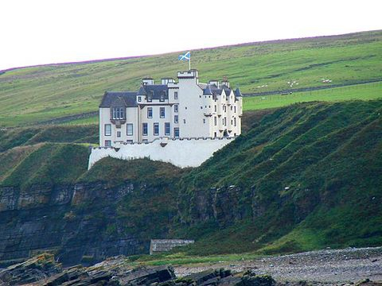

Blev ca 61 år.
omkring 1395 Dunlichtie, Dunbeath castle, Iverness, Scotland. [1]
1456 Roslin Castle, Midlothian, Scotland. [1]
History
A castle is first recorded on the rocky peninsula at Dunbeath in 1428,[4] when the lands belonged to the Earl of Caithness. The first recorded laird was Alexander Sutherland.[4] It later became the property of the Clan Sinclair through the marriage of the daughter of Alexander Sutherland to William Sinclair (1410–1484), the first Sinclair Earl of Caithness. The Sinclairs replaced the earlier structure with a four-storey tower house in 1620.
In March 1650, Dunbeath was attacked by the Royalist forces of James Graham, 1st Marquess of Montrose, during the Wars of the Three Kingdoms. Sir John Sinclair rode to Edinburgh to warn of Montrose's arrival, leaving his wife Catherine Fraser to defend Dunbeath against Sir John Hurry. She soon surrendered, and a Royalist garrison was installed. Montrose was defeated in April at the Battle of Carbisdale, and the opposition forces, under David Leslie, recaptured the castle.[4]
The castle was extensively remodelled in the 17th century by Sir William Sinclair, and again in 1853 and 1881, when David Bryce was the architect.<[2] From 1894 to 1945, the castle was owned by Vice-Admiral Sir Edwyn Alexander-Sinclair.[4] In that year, after 325 years of occupation by the Sinclair Family, the castle was sold to Bertram Currie. In 1967 it was sold again to Harry Blythe and Helen (Sinclaire) Blythe. The castle remained in their possession until 1976 when it was sold to Ray Stanton Avery. In 1997 the castle was sold to the current owner, Stuart Wyndham Murray-Threipland. The castle remains a private residence today and is not open to the public.